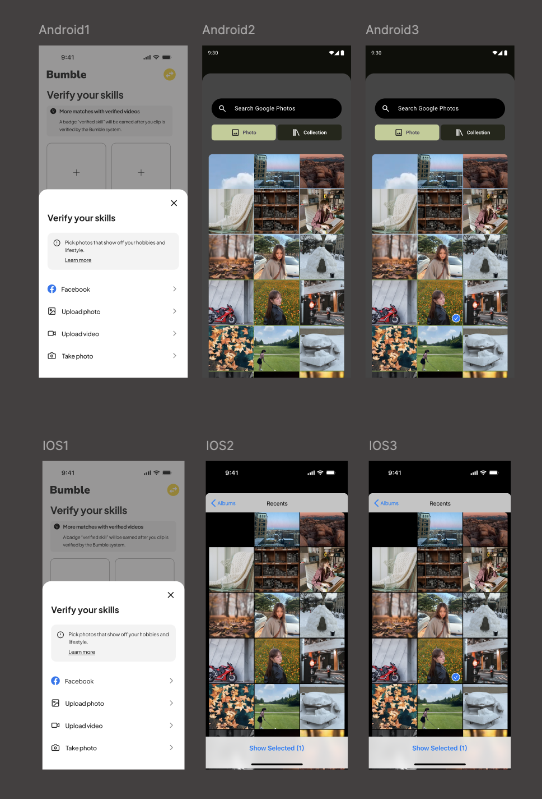

Product Design · Figma
Redesigning conversation activation — a feature that gives matched users a genuine reason to say something, built end-to-end across iOS, Android & Apple Watch.
The Problem
Bumble's product data showed that a significant portion of matches never converted to conversation. Users hit the blank message box and stopped — nothing to say, too much pressure to say it first.
of Bumble matches never lead to a first message
Bumble product brief · 2025
The real problem wasn't match quality. It was conversation activation — a blank text field places 100% of the social burden on one person. The design needed to change that dynamic entirely.
Research
"Conversation anxiety isn't a UX problem — it's a behavioral one. The design needed to lower perceived social risk, not just add a new button."
Competitive analysis across Hinge and LinkedIn, combined with behavioral psychology research on social reciprocity and common ground theory, pointed toward one conclusion:
Users message more when they have a specific shared topic — not just appearance.
Skill-sharing creates mutual value. Both parties feel they have something to gain.
Small easy actions increase follow-through. Micro-commitments lead to larger ones.
Process
Iteration 01 — Low Fidelity
Mapped the end-to-end flow before touching visuals. The key decision: where does Skill Snack live in Bumble's existing IA? Getting this right determined everything downstream — the feature had to feel native, not bolted on.
Used vibe coding to quickly work through the user flow and understand the concept.
Iteration 02 — Mid Fidelity
Validated the core interaction. The question was: swipe, select, or browse? Swipe felt gimmicky. Browse won — it respects the user's pace and signals deliberate intent.
Iteration 03 — High Fidelity
Built to full fidelity following Bumble's design system across iOS, Android, and Apple Watch. The Watch forced every element to justify its existence — three actions, zero cognitive load.
Solution
A structured, opt-in way to exchange skills with a match — a genuine reason to start a conversation that isn't just "hey."
iOS & Android — Adaptive System
Browse skills, propose an exchange, respond to matches — all within the existing Bumble conversation flow. Built as one adaptive system: navigation patterns, touch targets, and typography rendering adjust per platform while preserving Bumble's brand language.

Apple Watch — Glanceable
Three actions. Three seconds. Receive a skill exchange notification, accept or decline, send a quick reply.
Walkthrough — Free User Flow
A full walkthrough of the free user experience, screen by screen — narrating the design thinking behind each decision and the points where the flow nudges toward upgrading.
Outcome
"I've never seen a concept like this in five years of teaching this class."
— Course Instructor, Advanced Interaction Design · Carnegie Mellon University
Skill Snack was evaluated across three design reviews and successfully addressed the brief's core challenge — giving users a structured, low-pressure entry point to start a conversation.
What I'd do differently
I'd start with real user testing — specifically whether people feel comfortable disclosing skills on a dating app, and whether the exchange mechanic feels rewarding or transactional over time.
I'd also A/B test the entry point placement. Skill Snack currently lives inside the conversation flow — but it might convert better as a pre-match filter. A hypothesis worth validating before touching Figma.